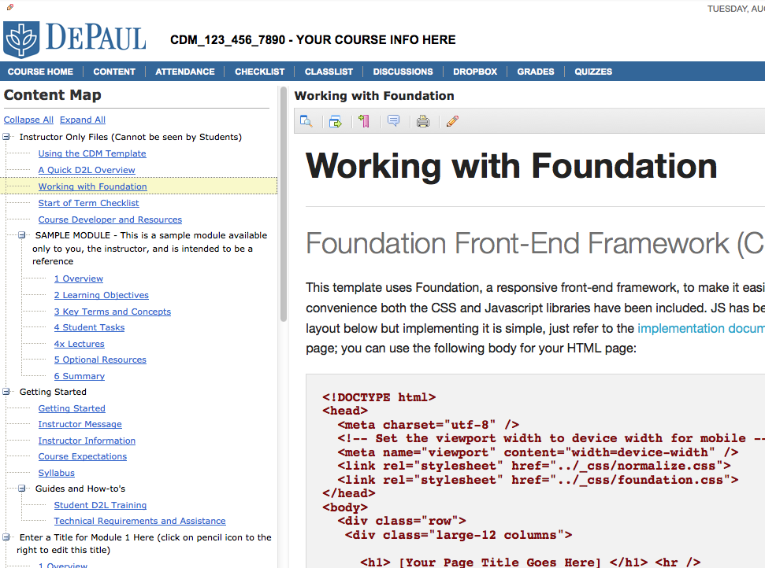
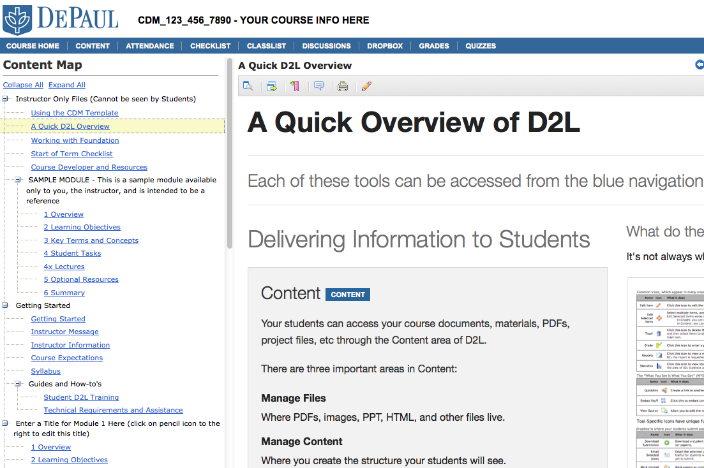
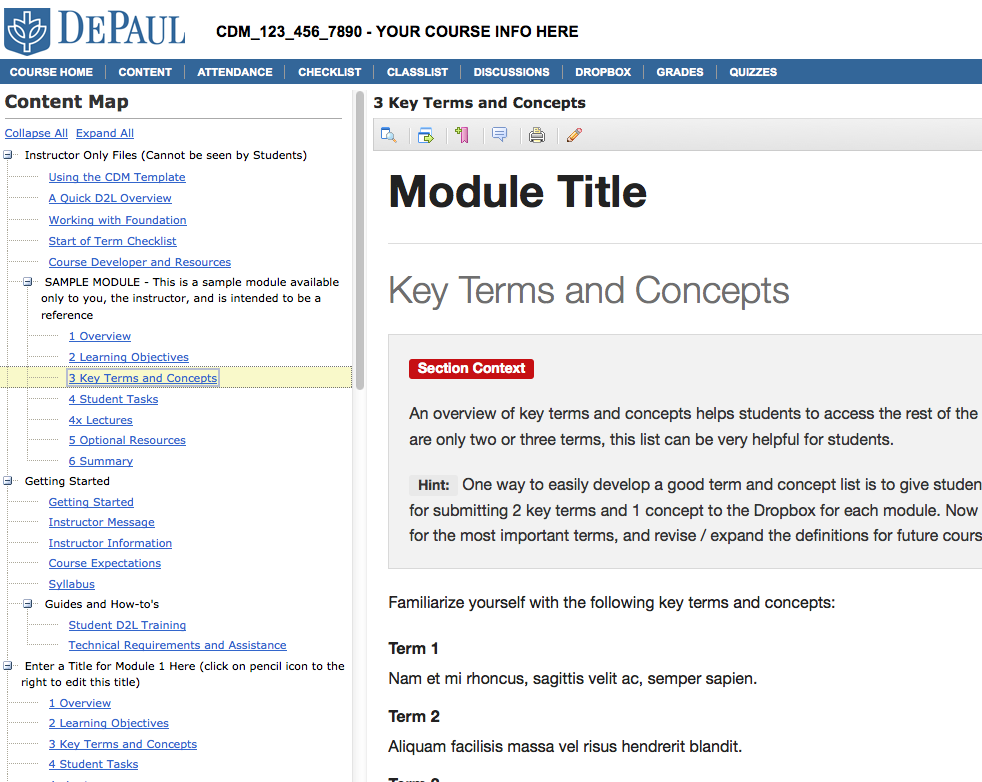
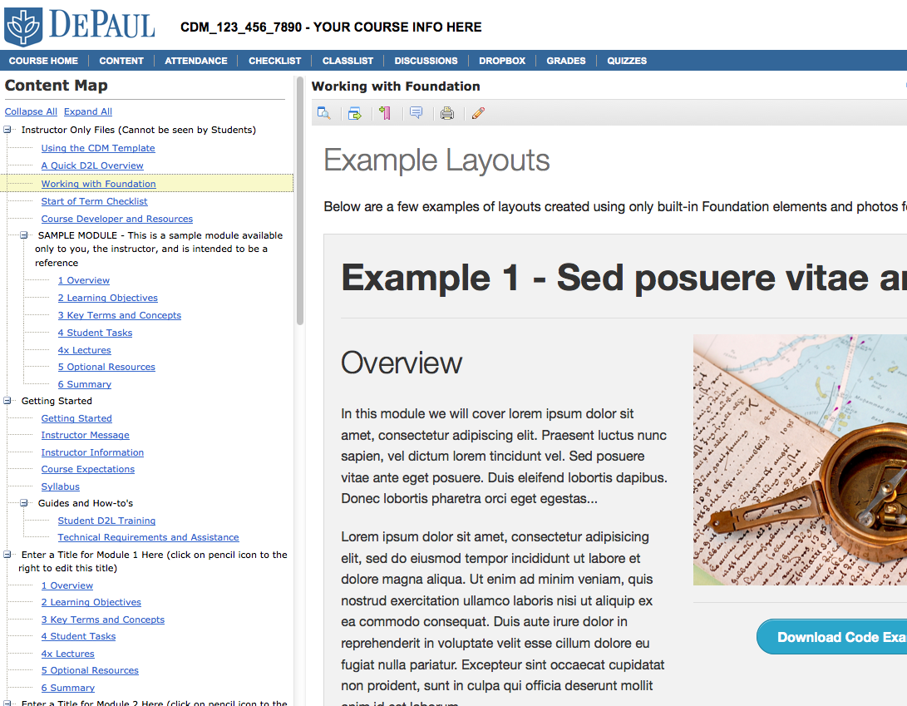

Welcome DePaul CDM faculty!
The CDM Template is intended to help you start working in D2L as quickly and with as little headache as possible. Simply download the zip file below, access your course in D2L, upload the file (following the instructions below), and start using the template.
- 
-

- 
- 
- 
Please let me know how the template is working for you (or if it's not, how can I improve it)!
Installing the Template
Here are the instructions (it's mostly clicking next):
- Download the template
- Log onto D2L at http://d2l.depaul.edu
- Click the pencil beside the course where you'll use the template
- Click "Import / Export / Copy Compontents" in the left "Course Admin Tools" area
- Choose "Import Components"
- Click BROWSE and select the template file
- Click NEXT and wait a moment
- Click NEXT
- Check "Select All Components"
- Click NEXT
- Click NEXT and wait a moment
- Click NEXT
- Excellent! The template has been installed!
To get started, click "Course Home" in the navigation bar and follow the instructions.
Removing the Template
If you don't like the template, here's how to get it removed! Ask Ian (ihall@depaul.edu). Better instructions are coming, but for the moment just ask me.